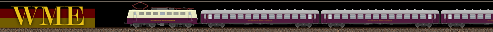
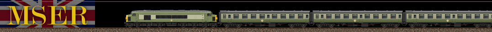

Les prémices de la MLTC
Malgré l’ambition portée dès les débuts du Mathlyens de construire un réseau de transport intégré et cohérent à l’échelle continentale, la réalité politique et logistique s’est avérée bien plus complexe que prévu. Des plans sont formulés dès 1955 pour créer une infrastructure de transport commune, mais rapidement, le projet d’unification complète est freiné par des coûts trop élevés et des intérêts divergents entre États membres.
Toutefois, l’ambition d’unifier les réseaux ferroviaires des pays membres demeure. Plusieurs projets sont alors rapidement étudiés pour donner corps à cette ambition :
C’est finalement ce dernier projet qui sera retenu et mis en œuvre. Trois compagnies interrégionales sont ainsi créées, chacune couvrant une grande zone du Mathlyens et jouant un rôle clé dans l’intégration ferroviaire du continent. Les voici :
-
CCFM - Compagnie des Chemins de fer du Mathlyens
Fondée en 1958 dans le cadre du plan de transport du Mathlyens, elle est la première compagnie ferroviaire créée et détenue par l'autorité du Mathlyens. Ayant pour cible principale le marché français et quelques zones limitrophes de Belgique, du Luxembourg, la base de son parc matériel provient en majeure partie de celui de la SNCF. -

WME - Westdeutsche Mathly Eisenbahn
Fondée en 1958 peu après la création de la CCFM et basée en RFA, elle a pour objectif de desservir l’Allemagne de l’Ouest et les zones limitrophes. -

MSER - Mathly Southern England Railways
Fondée en 1958, la MSER se substitue à la British Rail dans le sud du Royaume-Uni et obtient une partie de son parc. Elle est également en charge des différents ferrys-ferroviaires qui relient France et Angleterre.
Chacune de ces compagnies adopte une gouvernance semi-publique, reposant sur un financement mixte États-Mathlyens, et opèrent en parallèle des opérateurs nationaux. Peu à peu, ces compagnies mathlyéennes deviennent les concessionnaires attitrés de portions entières du réseau, notamment sur les axes transfrontaliers ou d’intérêt stratégique.
Bien que limitées dans leur rayonnement initial, elles posent les bases d’une future intégration ferroviaire du continent et constituent les précurseurs directs de la MLTC Railways, fondée plusieurs décennies plus tard.
L’intégration complète des FS et de la NS au sein de compagnies dédiées, placées sous la gestion directe de l’autorité du Mathlyens, figurait initialement dans le plan de transport. Ce projet ambitieux a toutefois été abandonné par la suite.
Une unification tardive
Durant les décennies suivantes, plusieurs initiatives pour unifier les trois compagnies voienle jour de manière fragmentaire, mais le projet global est peu à peu relégué au second plan dans l’agenda politique. Ce n’est qu’au début des années 1990, dans un contexte de relance économique et d’approfondissement de l’intégration du Mathlyens, que l’unification des transports refait surface comme un objectif stratégique majeur. Les enjeux de mobilité, de connectivité transfrontalière et de compétitivité face aux géants privés du transport poussent alors les autorités du Mathlyens à relancer sérieusement le projet.
C’est dans ce contexte que le groupe MLTC (Mathly Travel Company) voit officiellement le jour en 1999, avec la fondation de sa première filiale opérationnelle, Mathly Alliance Airlines, dédiée au transport aérien régional et inter-capitales. Ce lancement marque la naissance d’un groupe de transport multimodal à l’échelle mathlyéenne.
Deux ans plus tard, en 2001, c’est la branche ferroviaire du groupe, MLTC Railways, qui est fondée à son tour, à l’issue de la fusion de la CCFM, de la WME et de la MSER. Cette fusion donne naissance à une entité ferroviaire de grande envergure, opérant sur la majeure partie du territoire mathlyéen et jouant un rôle central dans la structuration du réseau continental.
Par la même occasion, la MLCC nouvellement créée reprend l’ensemble des activités de fret ferroviaire précédemment assurées par les trois anciennes compagnies. La